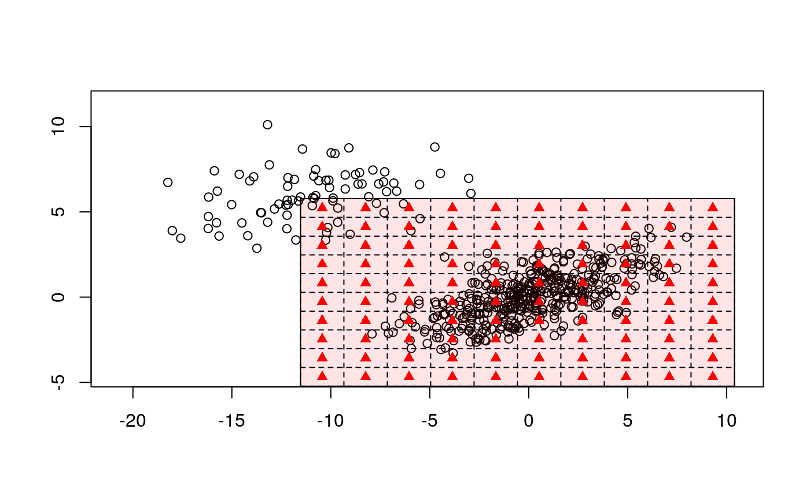

2d Binning
binningDepth2D.RdA robust method of decreasing a sample size and therefore a complexity of a statistical procedure. The method may be used within a kernel density or a predictive distribution estimation.
binningDepth2D(x, binmethod = "LocDepth", nbins = 8, k = 1, remove_borders = FALSE, depth_params = list(method = "LP"))
Arguments
| x | bivariate matrix containing data. Each row is viewed as one two-dimensional observation. |
|---|---|
| binmethod | A method for calculation center and dispersion measures. "LocDepth" uses location-scale depth, MAD uses median and MAD in each dimension. |
| nbins | number of bins in each dimension |
| k | responsible for tightness of bins. |
| remove_borders | Logical, include or not marginal bins |
| depth_params | other arguments passed to depthMedian |
Value
freq: a matrix containing the binned frequencies
mid_x: mid points for x
mid_y: mid points for y
breaks_x: breaks for x
breaks_y: breaks for y
input_data: max_depth_x and max_depth_y:
Details
Let us recall, that binning is a popular method of decreasing a sample size. To bin a window of \( n \) points \( {W}_{i, n} = \left\{ {X}_{i - n + 1}, ..., {X}_{i} \right\} \) to a grid \( {{{X}'}_{1}}, ..., {{{X}'}_{m}} \) we simply assign each sample point \( {{X}_{i}} \) to the nearest grid point \( {{{X}'}_{j}} \). When binning is completed, each grid point \( {{X}'}_{j} \) has an associated number \( {c}_{i} \), which is the sum of all the points that have been assigned to \( {{X}'}_{j} \). This procedure replaces the data \( {W}_{i, n} = \left\{ {X}_{i - n + 1}, ..., {X}_{i} \right\} \) with the smaller set \( {{W}'}_{j, m} = \left\{ {{X}'}_{j - m + 1}, ..., {{X}'}_{j} \right\} \). Although simple binning can speed up the computation, it is criticized for a lack of precise approximate control over the accuracy of the approximation. Robust binning however stresses properties of the majority of the data and decreases the computational complexity of the DSA at the same time.
For a 1D window \( {W}_{i, n} \), let \( {Z}_{i, n - k} \) denote a 2D window created basing on \( {W}_{i, n} \) and consisted of \( n - k \) pairs of observations and the \( k \) lagged observations \( {Z}_{i, n - k} = \left\{\left( {X}_{i - n - k}, {X}_{i - n + 1} \right)\right\}, 1\le i\le n - k \). Robust 2D binning of the \( {Z}_{i, n - p} \) is a very useful technique in a context of robust estimation of the predictive distribution of a time series (see Kosiorowski:2013b).
Assume we analyze a data stream \( \{{X}_{t}\} \) using a moving window of a fixed length \( n \), i.e., \( {W}_{i, n} \) and the derivative window \( {Z}_{i, n - 1} \). In a first step we calculate the weighted sample \( L ^ p \) depth for \( {W}_{i, n} \). Next we choose equally spaced grid of points \( {l}_{1}, ..., {l}_{m} \) in this way that \( [{{l}_{1}}, {{l}_{m}}] \times [{{l}_{1}}, {{l}_{m}}] \) covers fraction of the \( \beta \) central points of \( {Z}_{i, n - 1} \) w.r.t. the calculated \( L ^ p \) depth, i.e., it covers \( {R} ^ {\beta}({Z}_{i, n - 1}) \) for certain prefixed threshold \( \beta \in (0, 1) \). For both \( {X}_{t} \) and \( {X}_{t - 1} \) we perform a simple binning using following bins: \( (-\infty, {l}_{1}) \), \( ({l}_{1}, {l}_{2}) \), ..., \( ({l}_{m}, \infty) \). For robust binning we reject "border" classes and further use only midpoints and binned frequencies for classes \( ({l}_{1}, {l}_{2}) \), \( ({l}_{2}, {l}_{3}) \), ..., \( ({l}_{m - 1}, {l}_{m}) \).
References
Hall, P., Wand, M. P. (1996) On the Accuracy of Binned Kernel Density Estimators, Journal of Multivariate Analysis archive, Volume 56 Issue 2, 165--184
Holmstrom, L. (2000) The Accuracy and the Computational Complexity of a Multivariate Binned Kernel Density Estimator, Journal of Multivariate Analysis, Volume 72, Issue 2, 264--309, http://dx.doi.org/10.1006/jmva.1999.1863. (http://www.sciencedirect.com/science/article/pii/S0047259X99918638)
See also
Examples
# EXAMPLE 1 Sigma1 <- matrix(c(10, 3, 3, 2), 2, 2) X1 <- mvrnorm(n = 8500, mu = c(0, 0), Sigma1) Sigma2 <- matrix(c(10, 0, 0, 2), 2, 2) X2 <- mvrnorm(n = 1500, mu = c(-10, 6), Sigma2) BALLOT <- rbind(X1, X2) train <- sample(1:10000, 500) data <- BALLOT[train, ] plot(data)b1 <- binningDepth2D(data, remove_borders = FALSE, nbins = 12, k = 1) b2 <- binningDepth2D(data, nbins = 12, k = 1, remove_borders = TRUE) plot(b1)plot(b2)# EXAMPLE 2 data(under5.mort) data(maesles.imm) data2011 <- cbind(under5.mort[, 22], maesles.imm[, 22]) plot(binningDepth2D(data2011, nbins = 8, k = 0.5, remove_borders = TRUE))